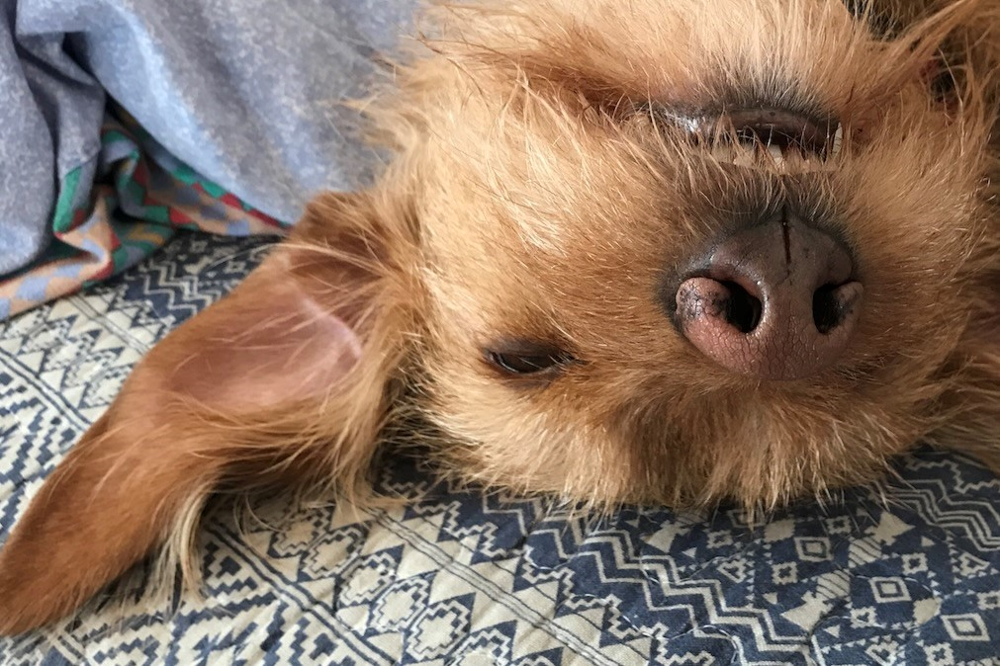

About Me

My name is Henrik (SoftDevNoob)
I am 51 years old.
- but not for long....
I come from Denmark (You know - The Milky way, Earth, Europe, Scandinavia, Denmark)
I have played music since i was 6.
I graduated from the Academy of Music in 2001 with piano as my first instrument.
I am also a trained truck mechanic, back in 1990.
This summer I began to read about coding.
By now I have a little knowlegde of the programming language C#.
I am learning as much as I can about IT in general, and
I am about to make a decision to walk new pathss, despite my age.
I think it's really fun beeing able to learn new things.
So in my spare time I am coding, learning to make websites, running, walking my dog.
I practice writing in english. Last time i did that, was in 1986 in the 9. grade.
So please bare with me if my lack of english skills is notible.
My dog Stella (I think she is broken)

Zzzzz, Yezterday I turned 10 Zzzzzz